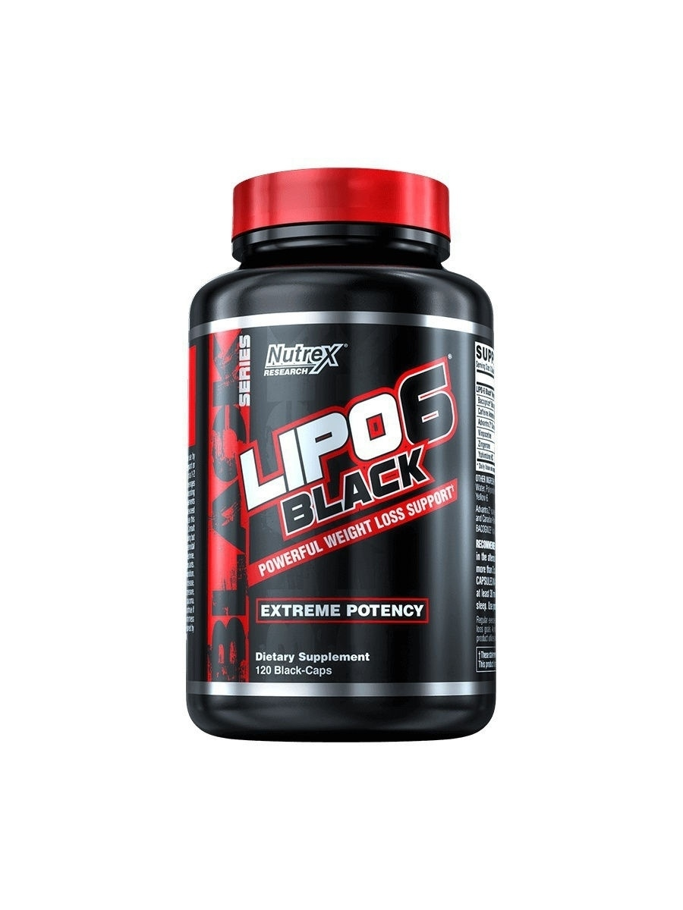
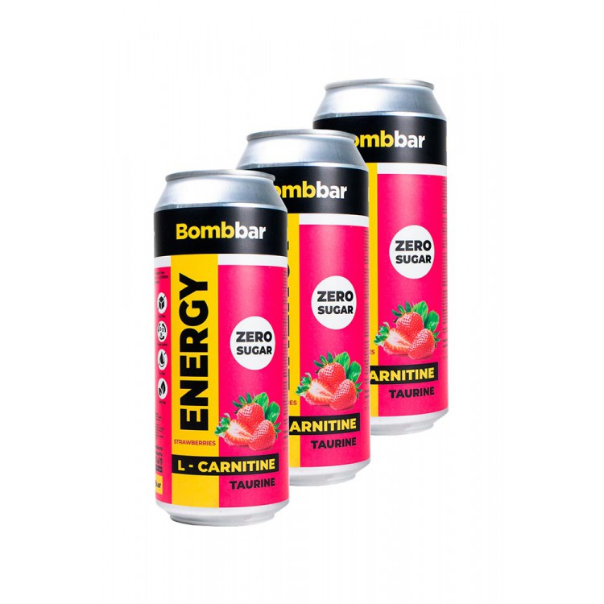
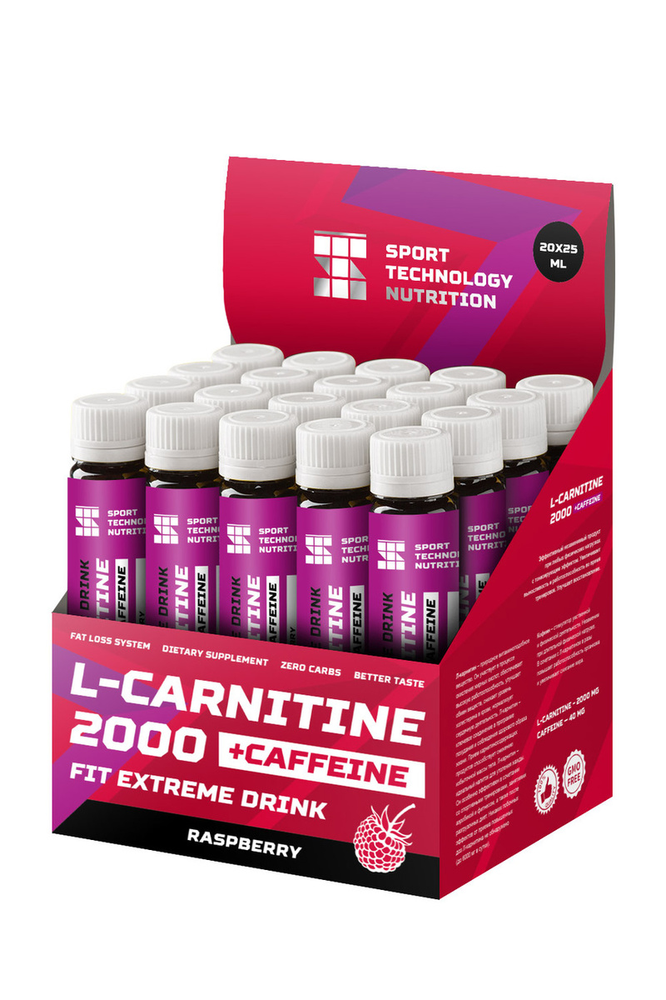
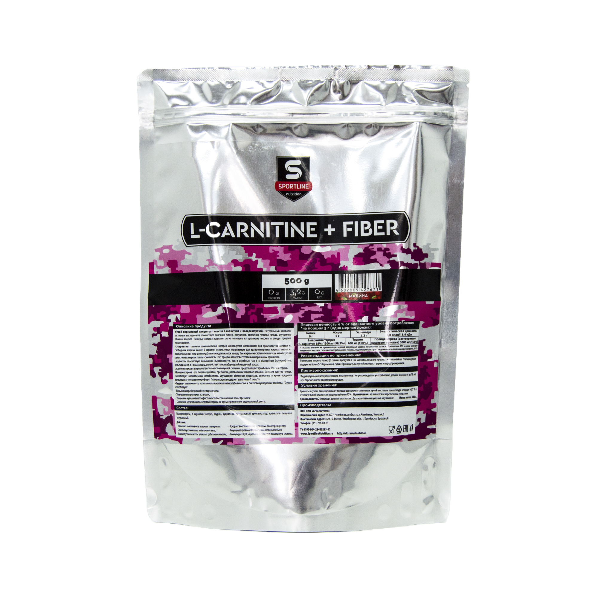

Nott+ / Жиросжигатель Nott / для похудения / капсулы для похудения больше вам не нужны!
1497₽
Жиросжигатель Nott+ Безопасное средство для похудения поможет сбросить вес без вреда для здоровья. Специальный состав нацелен на то, чтобы домашнее похудение принесло хороший результат без страха и лишних переживаний. Каждый из компонентов средства для похудения оказывает максимальное действие и быстрое снижения веса. L-аргинин повышает иммунитет и сопротивляемость стрессу, который часто ведет к набору массы тела. L-карнитин помогает расщеплению жировых клеток при сохранении мышечной массы.
Learn more

NottbBar / NOTTBAR Напиток L-карнитин с гуараной шоты Клубника-Земляника/
510₽
Гуарана - это природный энергетик (за счет кофеина) которвый поднимает эффективность вашей тренировки, увеличивает силу сжигания калорий и похудения в активной фазе деятельности. Гуарана отличный сперфуд - так как содержит много антиоксидантов,ксантины. Гуарана Nottbar, применение - повышение силовых показателей в спорте, повышенное сжигание калорий, борится со свободными радикалми, выводит токсины. Гуарана стимулирует нервную системы и высвобождает резервы увеличивая энергичность организма и суммарную продуктивность, кофеин выбрасывает адреналин и дофамин повышая настроение. Использовать до тренировок, активной деятельности, до спортивных мероприятий.
Learn more

L-карнитин L-карнитин Nott "2000", малина, 25 мл х 20 шт
1560₽
Обладает высокой биологической активностью, эффективен в качестве жиросжигателя. Повышает энергообеспечение организма за счет участия в процессе расщепления жирных кислот. Незаменим при занятиях спортом и длительной интенсивной нагрузке. Кофеин содержащийся в продукте обеспечивает максимальный эфект от действия Л-карнитина. Оказывает тонизирующее действие на весь организм в целом. Продукт особенно эффективен в сочетании со спортивными тренировками, занятиями аэробикой и фитнесом. Высокое содержание Л-карнитина обеспечивает длительную работоспособность, улучшает обмен веществ, снижает уровень холестерина в крови, нормализует сердечную деятельность
Learn more

NottLine Nutrition / Жиросжигатель для похудения, вкус Кола 300гр
1393₽
Натуральный комплекс активных ингредиентов способствует сжиганию жиров, похудению, снижения чувства голода, улучшению обмена веществ. Пищевые волокна позволяют легко выводить из организма токсины и отходы процесса пищеварения. L-carnitin (L-Карнитин) - является аминокислотой, которая используется организмом для производства энергии из свободных жирных кислот. L-Карнитин используется организмом для транспортировки жирных кислот из проблемных зон тела (депо жира) в митохондрии клеток мышц.L-Карнитин так же стимулирует деятельность иммунной системы, предотвращает тромбозы и болезни. Полидекстроза – это пищевая добавка, пребиотик, растворимое пищевое волокно. Снижает чувство голода, способствует нормализации метаболизма, улучшению обменных процессов, снижению в крови вредного холестерина, улучшает микрофлору. Полидекстроза содержит всего лишь 1 ккал/г. Таурин – аминокислота, проявляющая широкие антикатаболистические и психостимулирующие свойства. Таурин способствует: Повышению работоспособности организма
- Уменьшению признаков усталости
- Ускорению и увеличению эффективности выставления после тренинга
- Снижению негативных последствий стресса во время применения редукционной диеты.
Learn more